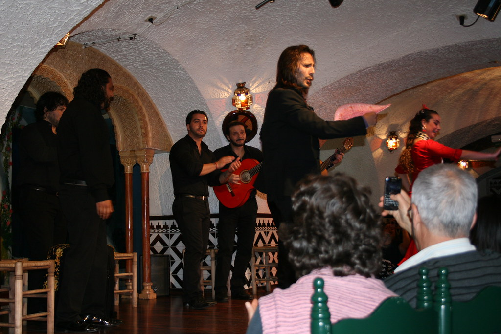

Activity 1. Flamenco origins

Read the following text and answer the questions below:
Flamenco is a passionate and captivating form of music and dance with its origins deeply rooted in the Andalusia region of Spain. It is a rich art form that has been influenced by various cultures over the centuries, including the Gypsies, Arabs, and Berbers. Flamenco is characterized by its unique combination of elements, including the use of scales like the Phrygian and the Hejaz, distinctive rhythms, expressive singing with melismatic techniques, and guitar playing. Despite its mysterious origins, flamenco is a powerful and evocative art form that continues to mesmerize audiences with its passionate performances.
Flamenco has different styles or "palos", also known as "cantes". They are song forms, diverse musical styles within the flamenco genre. Each one possesses its own unique characteristics and emotional expressions. These "palos" range from the sad "cante jondo" to the vibrant and rhythmic "alegrías" and the intense "soleá." Each palo is defined by its specific melody, rhythm, and lyrics, and it serves as a framework for both singing and dancing in the flamenco tradition. Flamenco palos allow for a wide range of emotional storytelling, making them an essential part of the captivating and culturally rich world of flamenco music and dance.
1. What is the geographical origin of flamenco?
2. How has flamenco been influenced by various cultures over the centuries?
3. What are some of the distinctive elements that characterize flamenco music and dance?
4. How does the guitar contribute to the unique sound of flamenco?
5. Can you describe some of the different palos or song forms within the flamenco genre and their emotional characteristics?